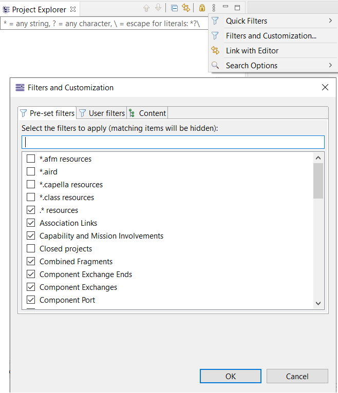
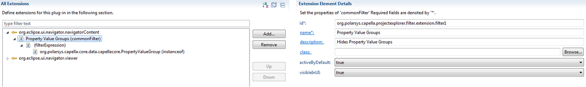
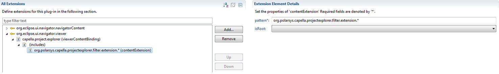

When defining new kind of model elements, those new elements will be by default displayed in the Capella Project Explorer.
Capella includes a default mechanism of filter on the Project Explorer in order to avoid unnecessary complexity for users.

One can define contributions to Capella Project Explorer filter mechanism by creating a plugin which contributes to the following extension points:
The filter is defined by referring to the Java class implementing the type of model element:

